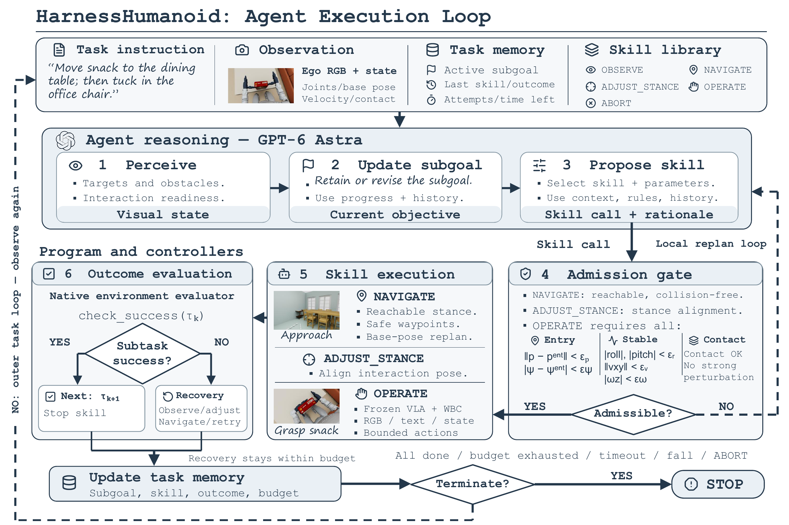

Language. Motion. Interaction.
HarnessHumanoid
An Agentic System for Long-Horizon
Whole-Body Loco-Manipulation
Connecting navigation, stance preparation, and whole-body skills
through an agent that adapts to execution feedback.
Individual skills.
Connected into longer routines.
Different initial positions
A different start.
The same intention.
Approach and interact from varied initial positions. Five household tasks, with four demonstrations for each task.
Stance adjustment
Arrive. Align. Interact.
The final approach matters. Compare HarnessHumanoid with the same task executed without stance adjustment, across three interactions.
Whole-body execution
Reaching takes
the whole body.
Bend-and-pick requires coordination beyond the arm. Two paired trials compare IK and a whole-body VLA on the same interaction.
Long-horizon demonstrations
One home.
A sequence of intentions.
Twelve furnished environments, each with its own ordered routine. Follow the exact task sequence beneath every replay.
About these replays
These videos are successful-trajectory presentation replays. Their source records include motion retargeting and scene composition; they are qualitative visualizations, rather than independent end-to-end VLA evaluations. The task order shown here comes from each video's verification record.
The method
Reason about the task.
Stay grounded in execution.
HarnessHumanoid coordinates a fixed repertoire of skills using current observations, robot state, task memory, and execution feedback.

Navigate
Select spatial goals and approach the next interaction using observations and scene context.
Adjust stance
Refine base position, heading, and body configuration before contact.
Act with the whole body
Execute a frozen whole-body VLA and use physical feedback to guide the next decision.
